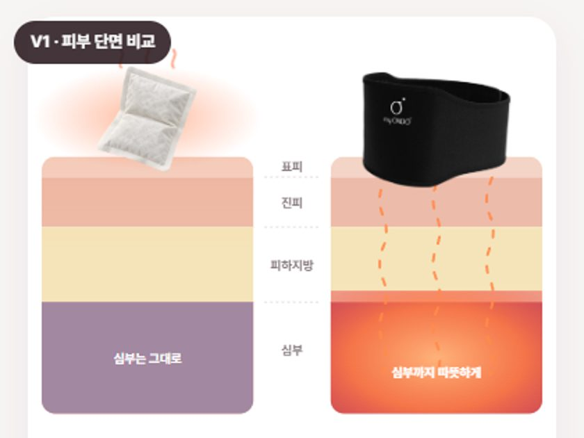
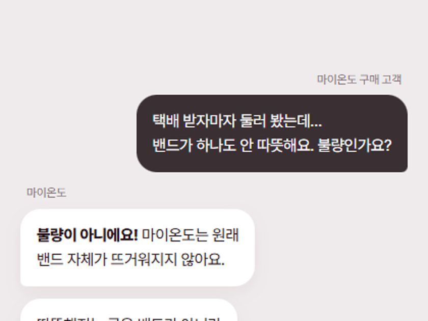
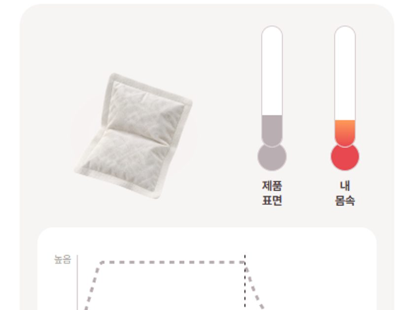
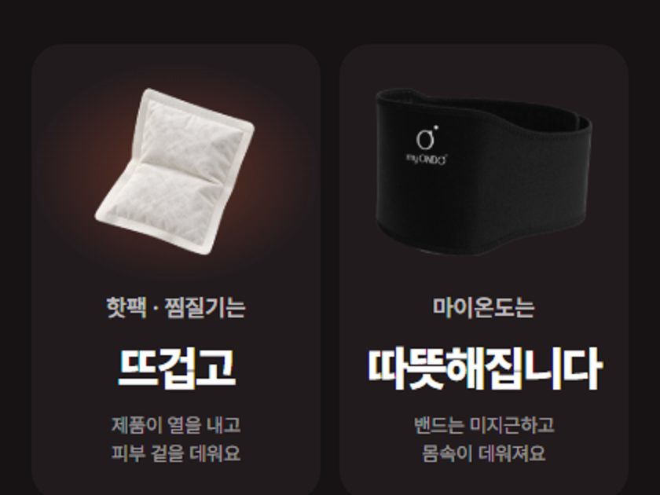
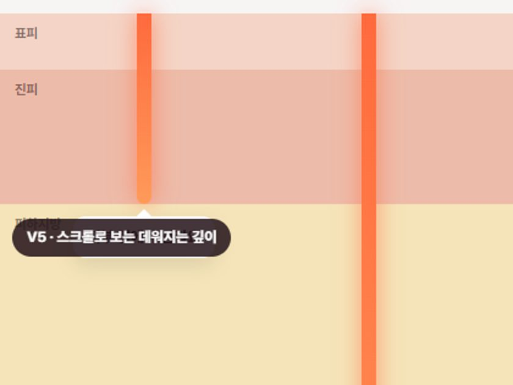

브랜드 비주얼과 DAILY 섹션 사이에 들어갈 섹션입니다. 핫팩·물주머니·전기 찜질기는 제품이 뜨거워져 겉을 데우고, 마이온도는 밴드가 아니라 몸속(심부)을 데운다는 점을 보여 줍니다. 휴대폰 화면 기준으로 확인해 주세요.

V1
핫팩과 마이온도를 피부 단면 위에 나란히 놓고, 핫팩은 겉만 데워지고 마이온도는 원적외선이 심부까지 내려가는 모습을 보여 줍니다. 아래 비교표로 정리합니다.
시안 보기 →

V2
"밴드가 안 따뜻해요, 불량인가요?"라는 실제 문의를 채팅으로 보여 주고 바로 답합니다. 착용 사진 위에 '밴드는 발열 없음 / 몸속은 따뜻해지는 중'을 표시합니다.
시안 보기 →

V3
탭으로 핫팩과 마이온도를 바꿔 보면, 온도계 두 개와 그래프가 '제품 표면'과 '내 몸속' 온도가 어떻게 달라지는지 보여 줍니다(개념 그래프).
시안 보기 →

V4
어두운 배경에 큰 문장으로 대비합니다. "뜨거운 건 '제품'이고, 따뜻해지는 건 '나'입니다" 아래에 4가지 차이를 표로 정리합니다.
시안 보기 →

V5
스크롤을 내리면 열이 피부층을 따라 내려갑니다. 핫팩은 피부 겉에서 멈추고, 마이온도는 심부까지 내려가 아래층이 따뜻하게 물듭니다.
시안 보기 →
심부 전달·지속 시간은 브랜드 안내 기준이며, 모든 그림은 이해를 돕기 위한 개념 연출입니다.